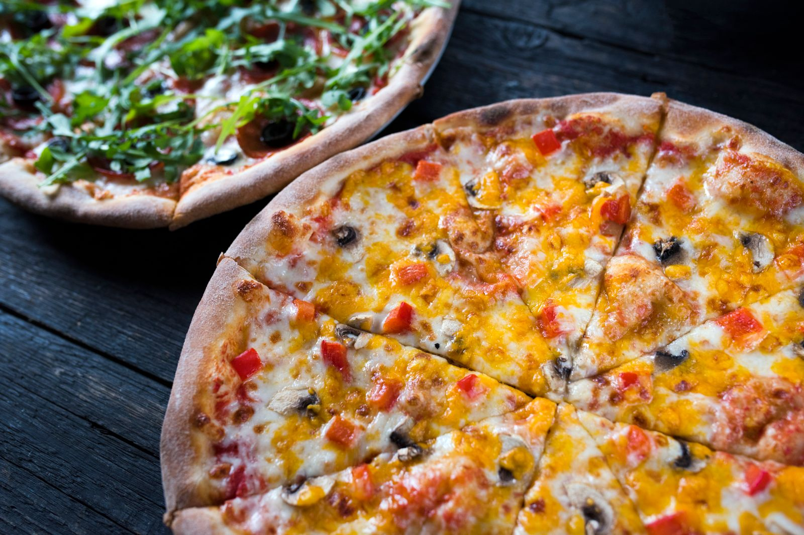
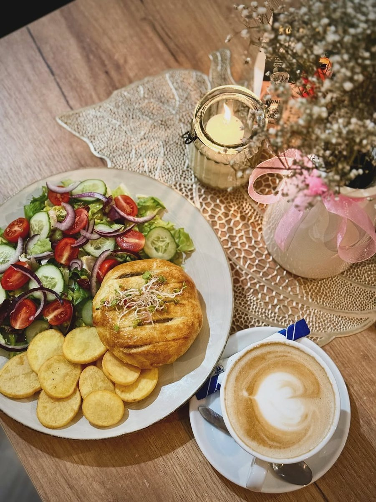

Gotujemy ze świeżych składników, prosto i z głową - tak, jak sami lubimy jeść. Zapraszamy na obiad, kolację albo po prostu na dobrą kawę w miłym towarzystwie.

Restauracja Na Rynku powstało z prostej potrzeby - żeby w okolicy było miejsce, gdzie dobrze się je i miło spędza czas. Bez sztuczności, bez udawania, za to z uwagą do tego, co ląduje na talerzu.
Gotujemy ze świeżych składników i sami jadamy to, co podajemy gościom. Lubimy, gdy ludzie zostają u nas dłużej, rozmawiają i wracają - bo właśnie po to to wszystko robimy.
polska
z pieca
pierogi
Rynku
Bez zobowiązań - opowiedz, co chcesz zrobić, a my podpowiemy jak.